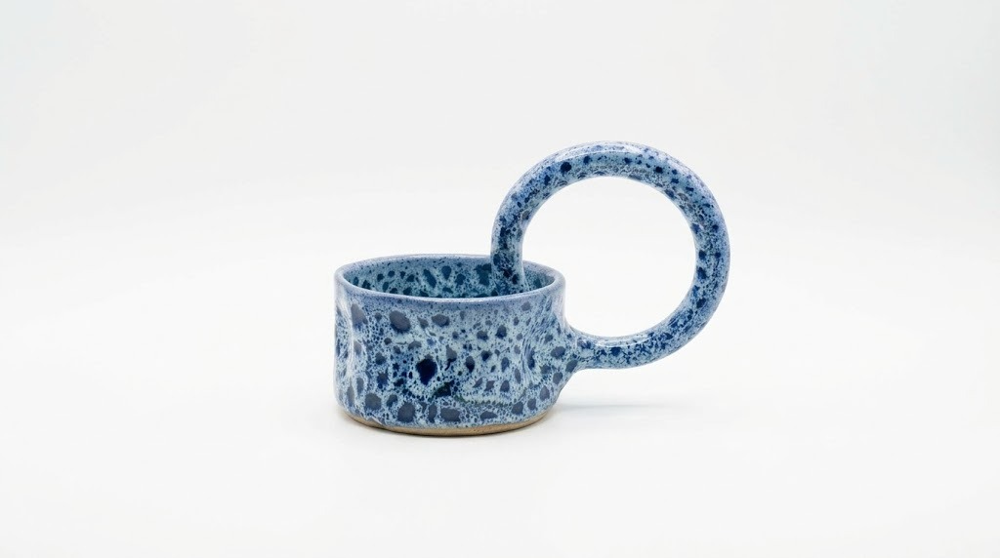
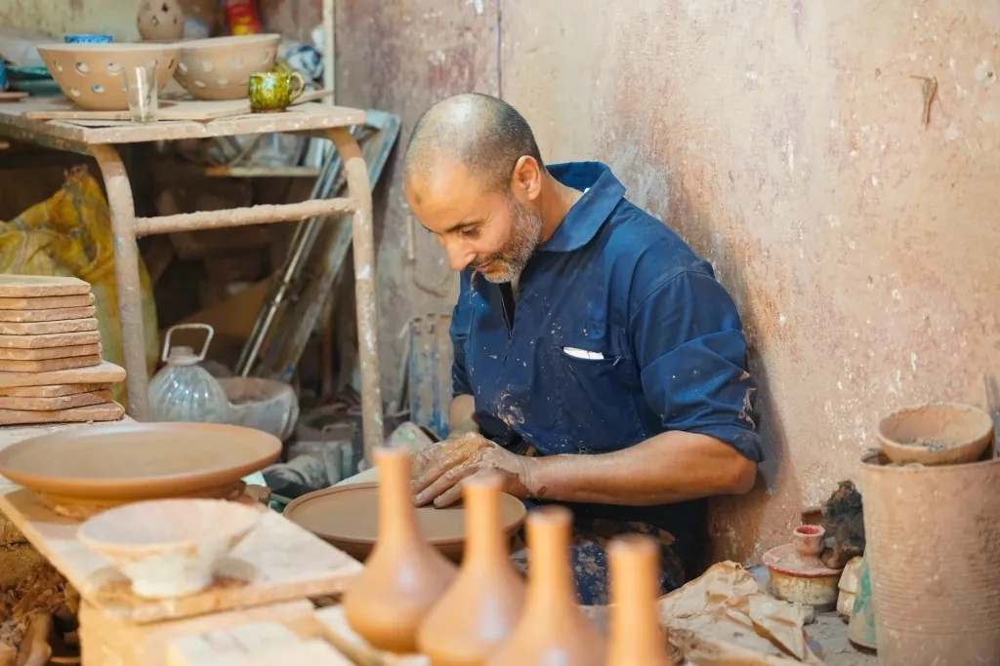
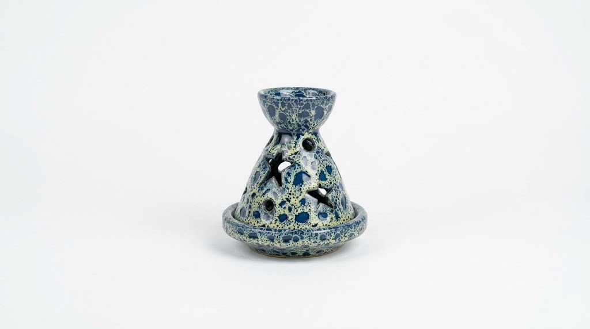
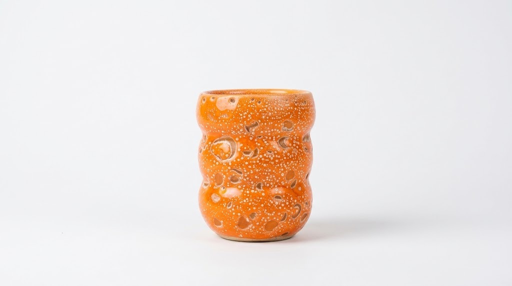
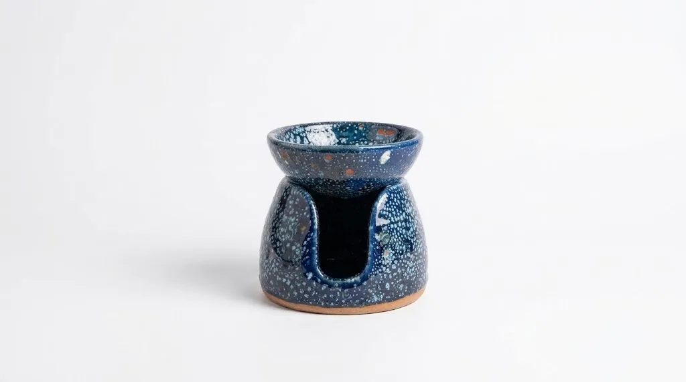

Creación Distintiva

La Taza Ring
Silueta contemporánea distintiva con asa anular hueca y ergonómica. Síntesis armónica de arcilla marroquí y geometría pura, realzada por un esmalte reactivo de óxido azul.
Donde siglos de tradición ancestral se unen al lujo minimalista. Explore las piezas de nuestra cooperativa artesanal, encargue vajillas personalizadas o participe en talleres íntimos de torno guiados por maestros alfareros en Agadir.

Nacido en Safi, Marruecos, en 1975 en el seno de una familia de devotos artesanos —un padre panadero, un tío carpintero y un hermano mayor maestro alfarero—, el Maestro El Mostafa El Azroud creció donde el aire respiraba pan caliente, virutas de madera y barro fresco.
A los 11 años, tocó la arcilla por primera vez e inició su riguroso aprendizaje. Hoy, con más de 40 años de maestría ininterrumpida, lidera nuestra cooperativa artesanal en Agadir para celebrar la esencia auténtica de la cerámica bruta marroquí y transmitir este saber hacer familiar.
"Dé valor a lo que elabora con sus propias manos. La felicidad reside en la paciencia."
Cada pieza es moldeada y torneada a mano individualmente por el Maestro El Mostafa El Azroud a partir de arcilla roja 100% natural de Marruecos.

Silueta contemporánea distintiva con asa anular hueca y ergonómica. Síntesis armónica de arcilla marroquí y geometría pura, realzada por un esmalte reactivo de óxido azul.

Quemador de incienso en cerámica artesanal con la silueta cónica del clásico tajín marroquí, calado con estrellas celestiales bajo un vidriado reactivo azul cobalto.

Vaso escultórico torneado a mano con ondas orgánicas, bañado en un esmalte naranja solar texturado con sutiles cráteres minerales.

Difusor de aceites esenciales y portavelas artesanal de cerámica con cuenco amplio, bañado en azul noche cósmico sobre barro visto.
Las respuestas clave antes de visitar nuestro estudio o reservar un taller en Agadir.
¿Tiene más dudas sobre el secado, los esmaltes o sesiones privadas? Ver las preguntas frecuentes completas →
Tanto si busca una decoración artesanal de alta gama para su hogar como si anhela modelar arcilla fresca con sus propias manos, nuestras puertas en Agadir están abiertas para usted.